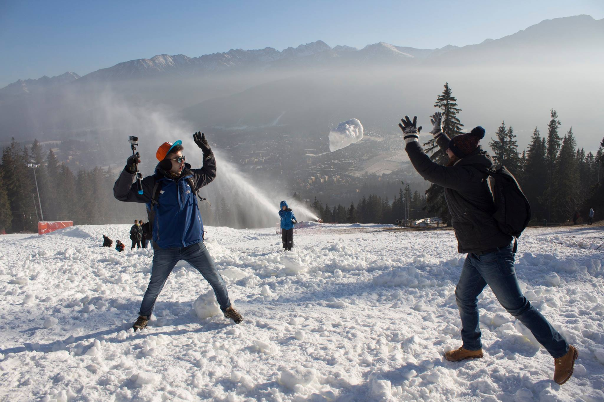

<div id="single-portfolio">
	<div id="portfolio-details" class="container">
		<a class="close-folio-item" href="#"><i class="fa fa-times"></i></a>
		
		<div class="row">
			<div class="col-sm-9">
				<div class="project-info">
					<h3>New Year Camping Trip</h3>
					<p>This Image has been taken by one of my friends on top of #Gubałówka mountain on 30th of Dec 2015, We were fighting with snow-ball and #Nikkita (My Friend) got this rock of snow and threw it toward me. I was lucky that it was just for fun :)</p>
					<p>Gubałówka is a mountain in the Gubałowskie Foothills, above the Polish town of Zakopane. The mountain is a popular tourist attraction, offering commanding views of the Tatras and Zakopane. There's a Zakopane-Gubałówka transmitter (Polish: RTON Gubałówka ) located on the top of the mountain.</p>
					<p style="color:red"> NOTE THIS PICTURE MAY SHOW FOR ALL THE GALLERY PHOTOS WHEN YOU CLICK ON THE LINK SYMBOL, THIS IS DUE TO NOT HAVING ENOUGH TIME TO MAKE EACH PICTURE A SHOW AND STORE LIKE THIS, SO PLEASE DON'T TAKE IT AS A FAULT, THANKS ! 
				</div>
			</div>
			<div class="col-sm-3">
				<div class="project-details">
					<h3>Gubałówka Mountain</h3>
					<p><span>Highest point: </span>1,126 m (3,694 ft)</p>
					<p><span>Location:</span> Zakopane, Poland</p>
					<p><span>Date</span> Dec. 30 2015</p>
				</div>  
			</div>
		</div>
	</div>
</div>